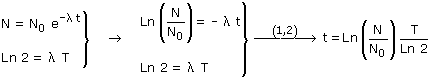
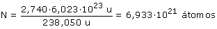
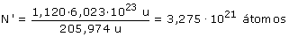
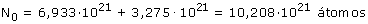
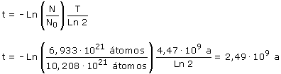

| Llamando N0 a la cantidad de átomos de U-238 que había al crearse la piedra y N a la cantidad de átomos de U-238 que hay hoy (Pasado un tiempo t):  La cantidad de átomos de U-238 que hay actualmente es:  La cantidad de átomos de Pb-206 que hay actualmente es:  Cada uno de estos átomos de Pb procede de un átomos de U-238 que se desintegró. La cantidad de átomos de U-238 que inicialmente había (N0) será la suma de la cantidad de átomos que quedan hoy (N) y de la cantidad de átomos que se desintegraron hasta hoy (N')  Sustituyendo estos valores en la expresión obtenida:  |